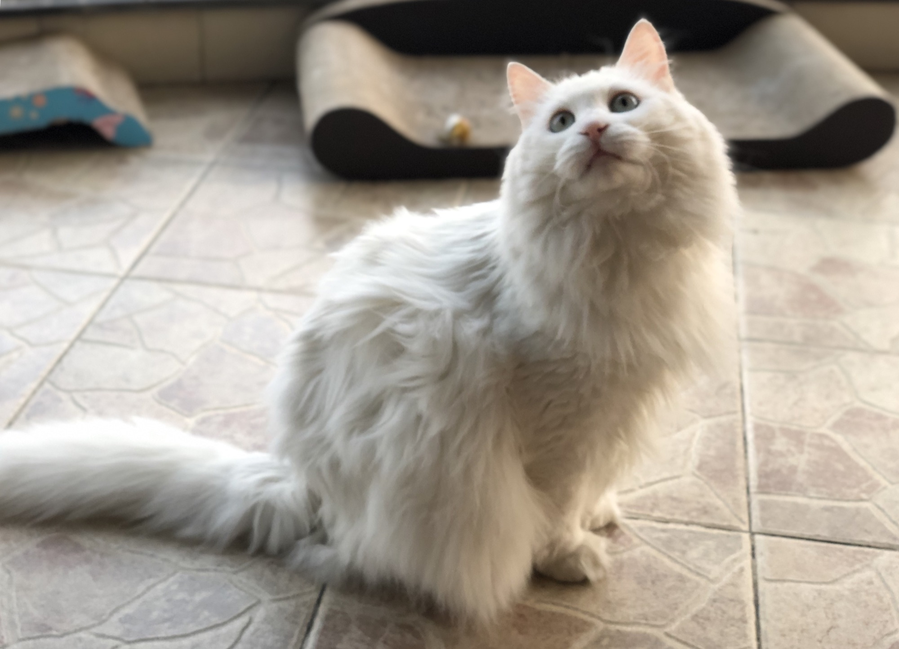

张三 Plate IPlate I · 临清狮猫 · The Linqing Lion-Cat
张三, quiet & immaculate
A 临清狮猫 — the rare Linqing Lion-Cat from Shandong: pure white, long-haired, with pink ears, a pink nose, and a plume tail that arrives in the room slightly after the rest of her.
张三 carries a placeholder name with great dignity. In Chinese, “张三” is the standard stand-in for any unnamed person — the everyman. She has made it her own. She does not announce herself; she simply appears, already composed, already exactly where she meant to be.
Her preferred operating mode is “observing.” The other two run a small, ongoing business of nuisance and noise; 张三 files quarterly reports.
- Breed
- 临清狮猫 (Linqing Lion-Cat)
- Coat
- Pure white, long, with a generous ruff
- Eyes
- Pale, with a faint hint of green
- Preferred surface
- Anywhere with a clear sightline to a doorway
- Signature sound
- A soft, civil prrt